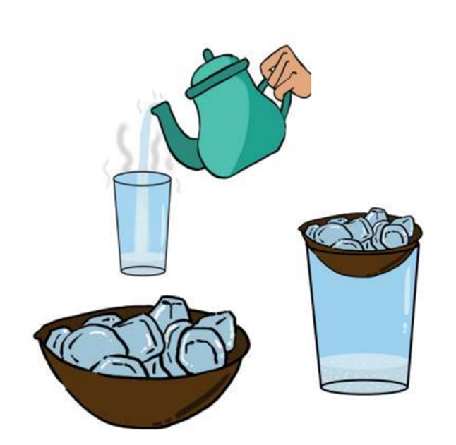

🧰 Alat dan Bahan
- Toples atau gelas kaca kecil yang transparan.
- Air panas sekitar 90–100°C.
- Es batu sebanyak kurang lebih 100 gram.
- Wadah kecil untuk menampung es batu dan menutup bagian atas toples.
- Spidol untuk memberi tanda ketinggian air.
⚠️ Perhatian: Air panas harus dituangkan oleh guru atau orang dewasa. Jangan menyentuh air panas maupun gelas yang panas.

🔬 Langkah Percobaan
- Dengan bantuan guru atau orang dewasa, tuangkan air panas ke dalam toples atau gelas kaca hingga sekitar 1/3 bagian.
- Beri tanda pada bagian luar gelas sesuai ketinggian permukaan air menggunakan spidol.
- Letakkan es batu di dalam wadah kecil yang dapat menutup bagian atas toples.
- Letakkan wadah berisi es batu di atas toples dengan hati-hati.
- Amati dinding bagian dalam toples. Apakah muncul bintik-bintik air?
- Setelah sekitar 5 menit, amati kembali permukaan air dan bintik-bintik air yang terbentuk.
- Diskusikan pertanyaan di bawah ini bersama teman-teman.
💭 Pertanyaan Diskusi
1. Apakah uap air di dalam toples benar-benar menghilang?
2. Menurut kalian, ke mana perginya uap air yang sebelumnya berada di dalam toples?
3. Mengapa muncul bintik-bintik air pada dinding toples?
4. Apa yang mungkin terjadi jika air di dalam toples dipanaskan kembali?
📘 Kesimpulan
Lengkapi kalimat berikut berdasarkan hasil pengamatanmu.
Air panas mengalami proses __________. Uap air yang menyentuh bagian atas yang dingin berubah menjadi titik-titik air melalui proses __________.